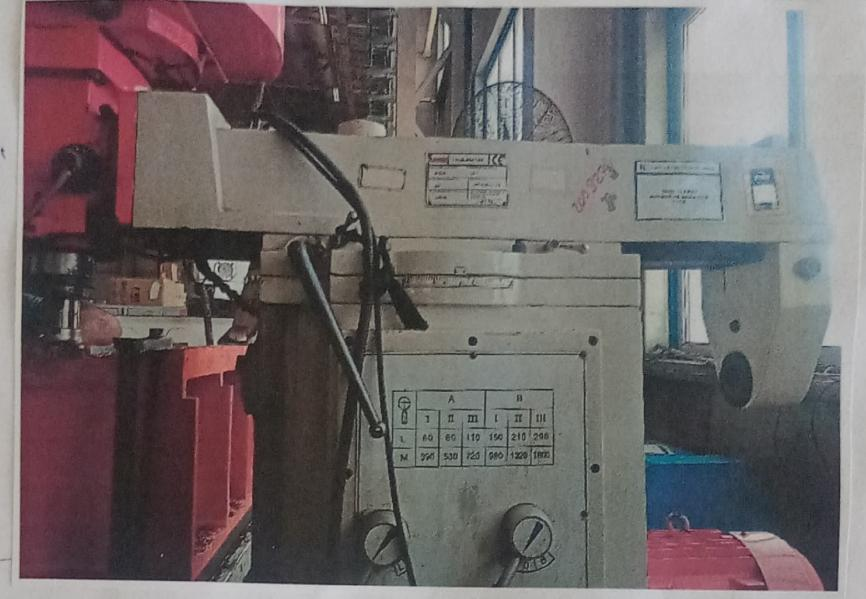

İÇTAŞ · SİLİFKE, MERSİN
İmalat ve üretim organizasyonu stajları
Akkuyu NGS için çelik yapı elemanları üreten tesiste 2024'te imalat, 2026'da üretim organizasyonu ve kalite süreçlerini gözlemledim.
01 / 01.07–09.08.2024 · 30 İŞ GÜNÜ
ME 200
ME 200
İmalat stajı
İÇTAŞ Endüstriyel Boru Lojistik ve İnşaat'ta malzeme hazırlığı, imalat, teknik resim ve sipariş takibi süreçlerini inceledim.
- Talaşlı imalat, CNC plazma kesim, torna ve freze süreçlerini sahada gözlemledim.
- TIG, tozaltı ve argon kaynağı ile metal şekillendirme uygulamalarını inceledim.
- Donatı ucu kesme, soğuk dövme, diş açma, bükme ve kalite kontrol adımlarını takip ettim.
- TS 283.24 ve 00053.24 numaralı siparişlerde teknik resim ve üretim takibine katıldım.

02 / MART–NİSAN 2026
ME 322
ME 322
Organizasyon stajı
İÇTAŞ Endüstriyel Boru Lojistik ve Çelik İmalatları A.Ş.'de üretim planlama ve kalite süreçlerini inceledim.
- Akkuyu NGS kapsamındaki çelik konstrüksiyon üretim akışını ve görev dağılımını gözlemledim.
- PNAE G-7 çerçevesindeki kalite kontrol ve tahribatsız muayene (NDT) süreçlerini inceledim.
- Üretim verilerinin takibi, raporlama ve İSG saha uygulamaları hakkında bilgi edindim.
ME 322 / ODAK
- Üretim iş akışı ve görev dağılımı
- Kalite kontrol ve NDT
- Üretim verisi, raporlama ve İSG
Bu döneme ait yayımlanabilir saha fotoğrafı bulunmuyor.